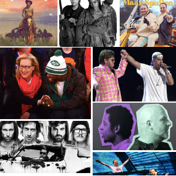

De melkweg is van plan om een subculture-avond organiseren, de naam hiervoor is Clash of Cultures. Het gehele evenement moet nog op de markt worden gezet, denk hierbij aan: onderzoek, concept, identiteit, promotie etc.. Het concept is dat er een keer in de maand twee subculturen samenkomen op 1 feestavond. Deze subculturen zullen radicaal van elkaar verschillen. Doel is om de verschillen en overeenkomsten te ontdekken en te vieren.
Het doel van deze opdracht was een nieuwe/eigen identiteit te ontwerpen die aansprekend is voor alle mogelijke subculturen en waarmee de vormgeving van de Melkweg eenvoudig alle uitingen voor diverse media kan vormgeven.

Hoe we dit hele proces wilden aanpakken was aan onszelf. Ik begon met het ‘letterlijk’ vertalen van de opdracht. Wat is nou een ‘clash of cultures’, en wat is nou ‘beeldtaal’ vroeg ik mijzelf af.
Ik ging op verkenning uit, wie is de Melkweg, wat is de geschiedenis van de Melkweg, waar staan ze voor.
Na mijn onderzoek ben ik begonnen met het verbeelden van mijn onderzoek. Ik begon met schetsen. Alles wat er in mij op kwam zodra ik dacht aan ‘clash of cultures’. Al snel begon ik met het tekenen van potentiele logo’s en posters. Ideeën waar ik uiteindelijk niets mee heb gedaan.

In dit proces liep ik vast, we zaten in lockdown en de muren kwamen op me af. Ik dacht aan vrijheid en wat dat betekend voor mijzelf. Ik gingen duiven tekenen, duiven zijn een symbool voor vrijheid. De Melkweg staat ook voor vrijheid, je mag daar zijn wie je wilt, luisteren naar je favorieten muziek en hier helemaal in op gaan.

De duiven heb ik toevoegt aan het logo. De letters van het logo staan door elkaar, evenals de kleuren. Dit staat voor het mixen van verschillende subculturen die zullen optreden tijdens deze avonden.